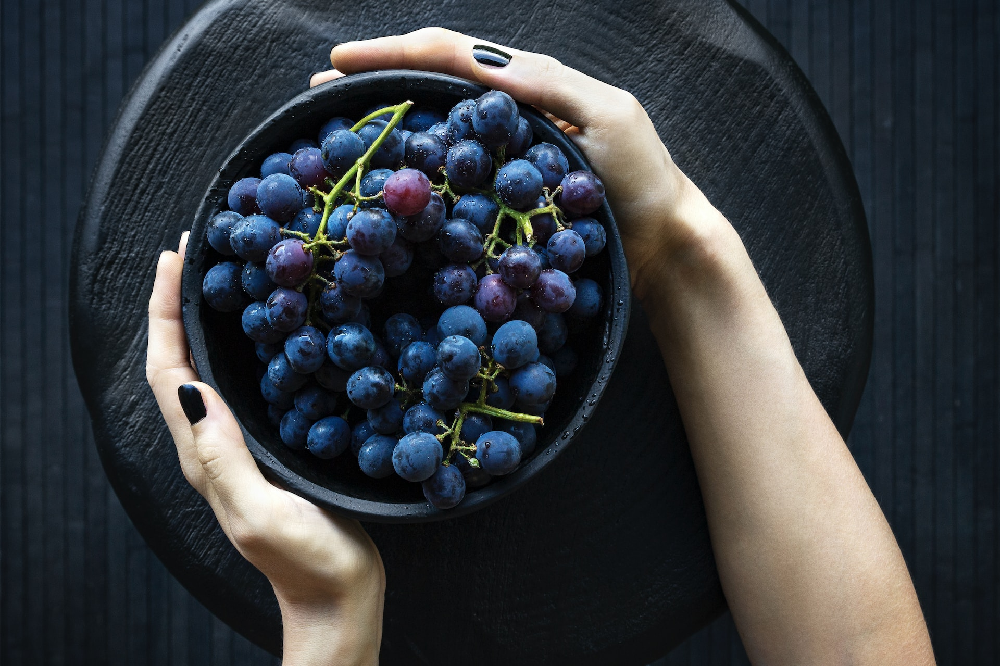

Historia

1Creación del vino
Aquí hay un resumen de cómo se cree que ocurrió la creación del vino:
-
- Descubrimiento casual:
- Se cree que el vino se descubrió por casualidad cuando alguien dejó uvas maduras en un recipiente, y las condiciones ambientales (como la temperatura y la presencia de levaduras) provocaron la fermentación de los azúcares naturales en las uvas, transformándolos en alcohol.
-
- Domesticación de la vid:
- A medida que las personas se dieron cuenta de los efectos agradables del líquido fermentado, comenzaron a cultivar uvas de manera intencional para producir más vino. Esto llevó a la domesticación de la vid, donde las variedades de uva se seleccionaron y cultivaron para mejorar el sabor y la calidad.
-
- Mejora del proceso:
- Con el tiempo, las técnicas para la producción de vino se fueron perfeccionando. Las personas aprendieron a controlar mejor la fermentación, a elegir las mejores uvas y a almacenar el vino en recipientes adecuados, como ánforas de barro y, más tarde, barricas de madera.
-
- Cultura y comercio:
- El vino se convirtió en una parte importante de muchas culturas antiguas, como la griega y la romana, y se utilizaba en rituales religiosos, celebraciones y como una bebida social. Con el tiempo, el comercio del vino se expandió, llevando a la difusión de la producción vinícola por toda Europa y otras partes del mundo.
- Desde entonces, la producción de vino ha evolucionado significativamente, con técnicas más avanzadas, mejor comprensión de la enología (el estudio del vino) y una amplia diversidad de variedades de uva que producen vinos con diferentes sabores, aromas y características. El vino sigue siendo una bebida apreciada en muchas culturas y una parte importante de la gastronomía global.